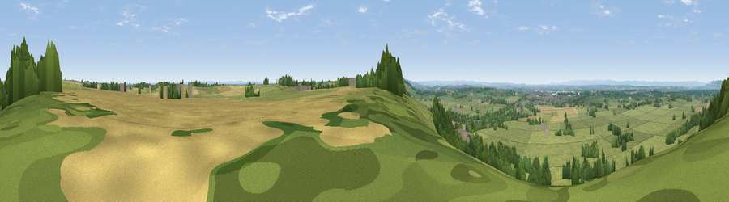

Viewpoint near Old Sodbury
#13027 in England · top 15% of its area beats it · near Old Sodbury · path 136 mWhere it is
The exact computed spot (ST 75925 82125). Click the marker for map links.
Public access: the nearest public right of way is about 136 m away — the final stretch may cross private land. Computed from Natural England's CRoW access layer and OpenStreetMap rights of way — not the legal definitive map. Always verify locally.
The view, rendered

A 360° render of this exact spot computed from the terrain model, tree cover and land cover — summer colours, afternoon light, calibrated against photographs of famous viewpoints. Real trees, hedges and buildings will differ in detail.
The panorama
Grey silhouette: terrain skyline in each direction (720 bearings, Earth curvature and refraction included). Dashed green: skyline with trees (+15 m) and buildings (+8 m) as obstacles. Blue strip: how far the ground is visible on each bearing.
Where the view opens
Wedge length = distance to the farthest visible ground on that bearing (vegetation-aware). Rings at 10, 25 and 50 km.
What fills the view
71% grassland · 15% woodland · 11% cropland · 3% built-up
Angular shares of the visible panorama (visual magnitude), not map area. Landscape diversity 0.38 (0–1 Shannon).
Key numbers
More beautiful places nearby
The staircase of upgrades: each row has a higher view potential than everything closer. Driving times are estimates from straight-line distance, calibrated against real road routing — check an actual route before setting out.
| Place | Direction | Drive | Score |
|---|---|---|---|
| Viewpoint near Old Sodbury | S · 1 km | ~2 min | 62.9 |
| Viewpoint near Horton | NNE · 2 km | ~6 min | 65.3 |
| Viewpoint near Horton | NNE · 3 km | ~8 min | 66.9 |
| Viewpoint near Wortley | N · 10 km | ~20 min | 67.8 |
| Wotton Hill | N · 12 km | ~22 min | 70.7 |
| Viewpoint near North Nibley | N · 13 km | ~24 min | 76.3 |
| Hanging Hill | SSW · 13 km | ~24 min | 76.4 |
| Viewpoint near Stinchcombe | N · 16 km | ~28 min | 80.5 |
51.53751, -2.34851 · source: screening · position refined by local search. Computed location — check access rights before visiting.